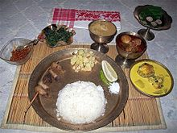

| The staple food of Arunachal Pradesh is rice, along with
fish, meat and leaf vegetables.[30] Many varieties of rice are
used. Lettuce is the most common vegetable, usually prepared by
boiling with ginger, coriander and green chillies.[31] Boiled rice
cakes wrapped in leaves are a popular snack. Thukpa is a kind of
noodle soup common among the Monpa tribe of the region.[32]
Native tribes of Arunachal are meat eaters and use fish, eggs,
beef, chicken, pork and mutton to make their dishes. |
 |
| Assamese cuisine is a mixture of different indigenous
styles, with considerable regional variation and some external
influences. Although it is known for its limited use of spices,
[34] Assamese cuisine has strong flavours from its use of endemic
herbs, fruits, and vegetables served fresh, dried or fermented.
Fish is widely eaten. Other Non-vegetarian items include chickens,
ducks, pigeons, snails, silkworms, insects, mutton, pork, venison
and turtle. The region's cuisine involves simple cooking processes,
mostly barbecuing, steaming, boiling or fermenting. |
 |